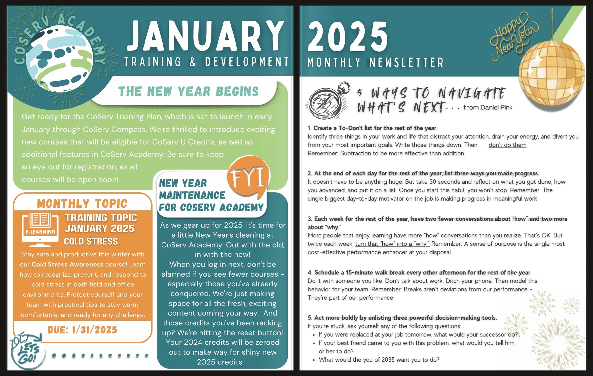
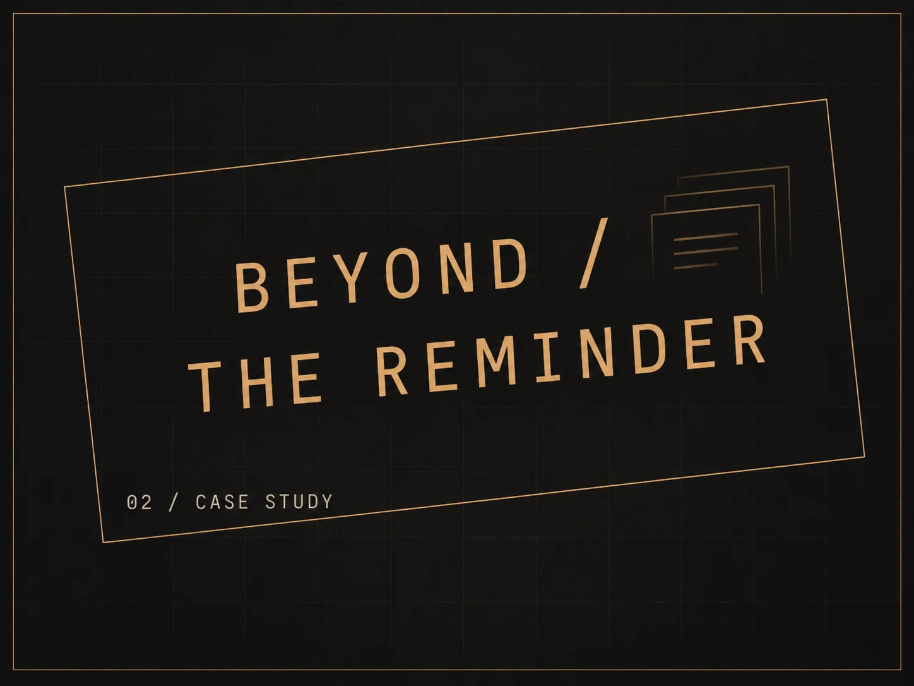
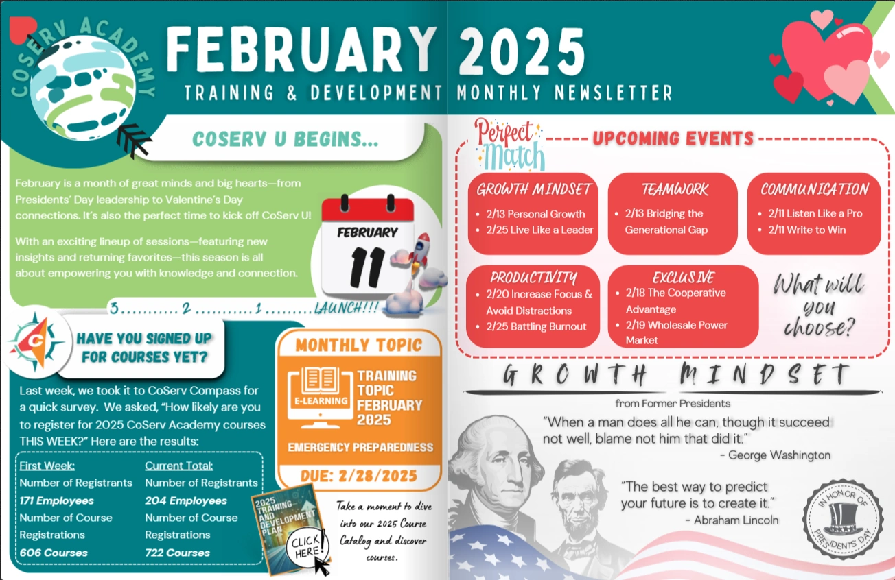
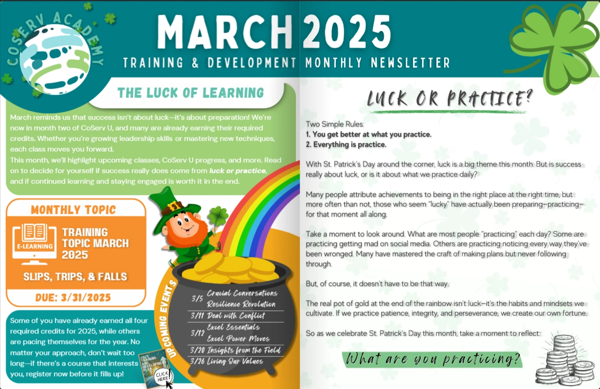
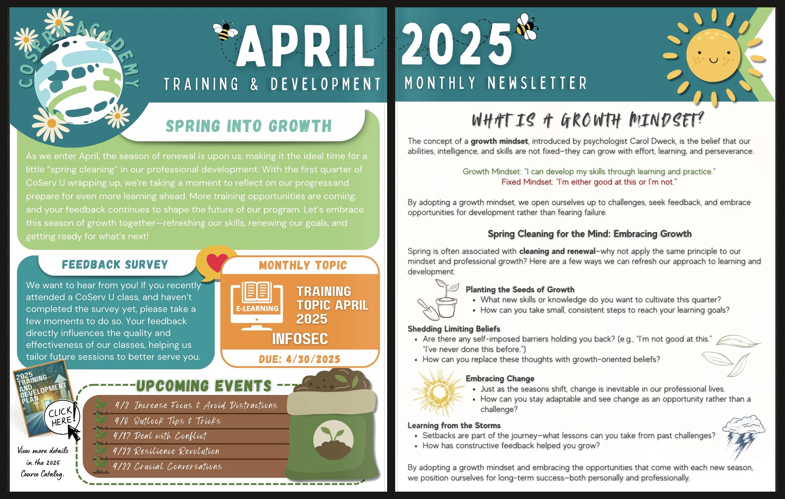
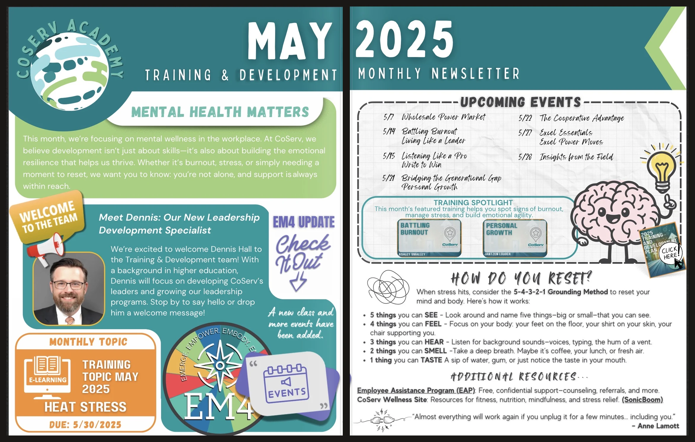
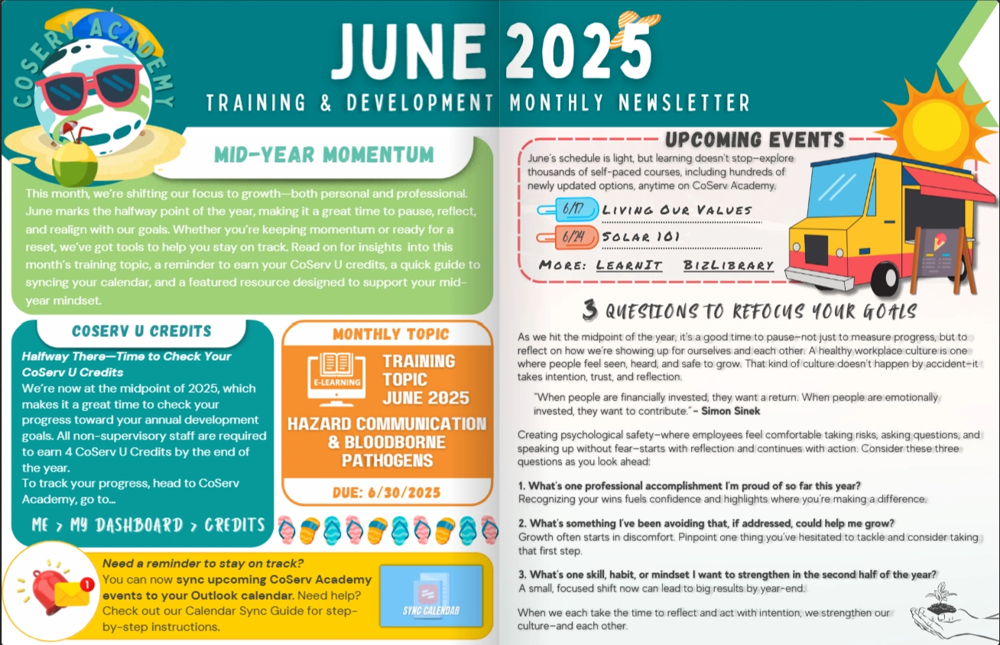
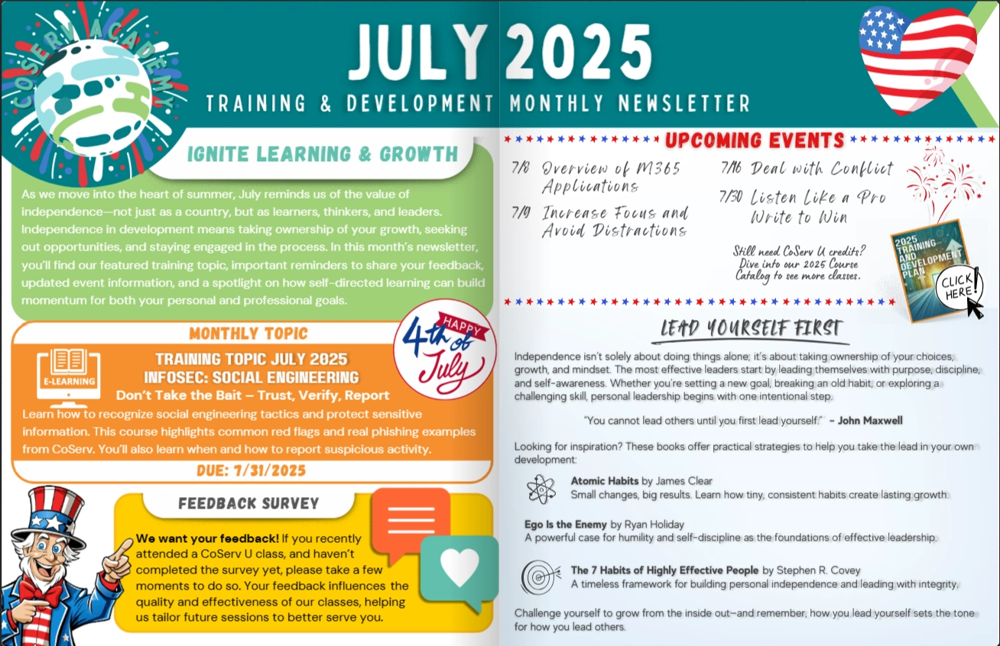

SELECT IMAGE TO VIEW FULL SIZE ↗
A monthly training newsletter became an opportunity to do more than announce deadlines. It could connect employees to learning, invite reflection, and give development a more human voice.

02 / CASE STUDY · LEARNING COMMUNICATIONS
When I began managing the monthly Training & Development newsletter, I inherited an established communication channel. It already served an important purpose: keeping training in front of employees. But repetition had made it easy for the message to become another monthly reminder rather than something worth opening.
Employee feedback helped sharpen the question: what would make this communication genuinely useful, not simply another item in the inbox?
The opportunity wasn't to make it longer for the sake of being longer. It was to connect required learning with the courses, resources, ideas, and conversations that could help employees grow.
I kept the essentials easy to find and made room for something more useful alongside them. The recurring training topic remained prominent, while each issue gave employees another reason to engage with the communication.
Put the current training topic, deadline, and key announcements where employees can find them quickly.
Use seasonal themes, current programs, practical resources, and real workplace context instead of repeating a generic message.
Use the expanded space for questions and small prompts about mindset, practice, wellbeing, and self-directed growth.
Choose a month, or use the arrows to move through the collection. Open any spread at full size to read it in detail.







Source: original Training & Development newsletters, January–July 2025. All fourteen pages are included in the seven spreads, without additional cropping.
The issues connect communications with concrete actions: complete required e-learning, register for CoServ U courses, view upcoming events, review resources, and share feedback about the learning experience.
The February issue also reports a snapshot of early CoServ U sign-ups. Between the two reported figures, registrants increased from 171 to 204 and course registrations from 606 to 722. Those numbers describe program registration activity reported in the newsletter, not a measured effect of the newsletter itself.
Counts are reproduced from the February 2025 issue. No newsletter open-rate, click-through, or attributable engagement figures are available here, so none are claimed.
A newsletter won't replace a thoughtful training program. But it can help employees navigate one: understand what needs attention, find opportunities that fit, and encounter a useful idea they weren't looking for.
For me, the most interesting part was making space for both kinds of learning: the required and the self-directed. One keeps the organization moving. The other gives people room to grow.
← Explore more work Related case study ↗